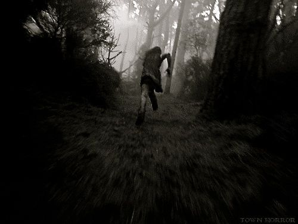
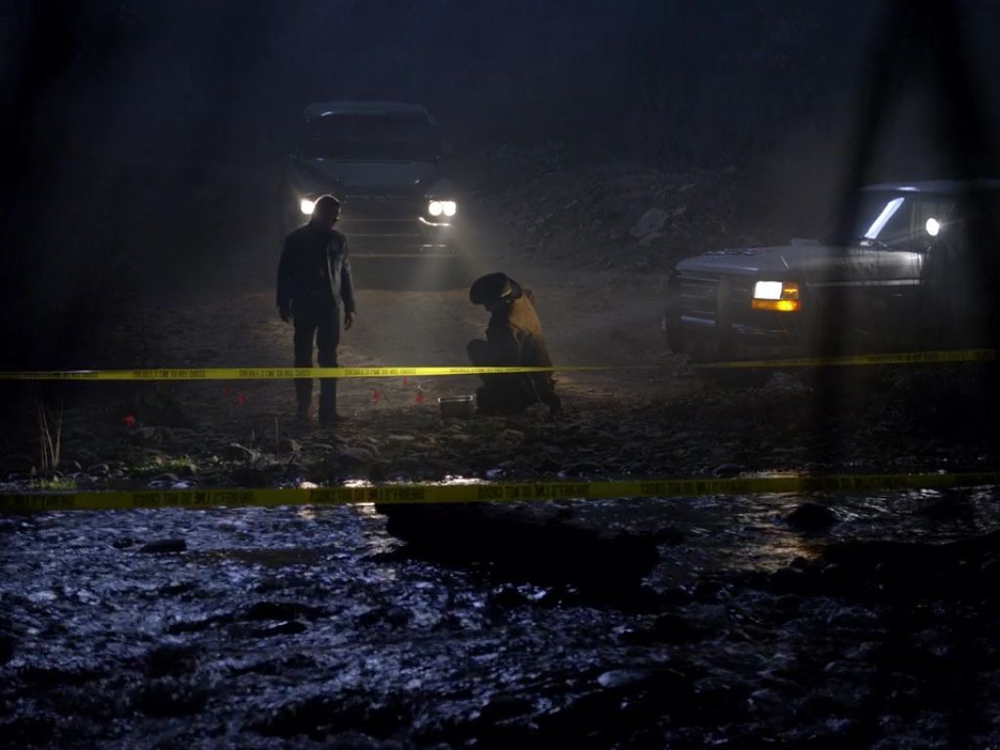

Salí de mi escondite y corrí lo más rápido que pude sin mirar atrás, cuando llegue a la cabaña pude encontrar a Sol, Abril y Mateo, Abril explicó cómo ese ser extraño se llevó a Noah cuando estaban escapando.
 Llamamos a la policía y llegó lo antes posible. Luego de días aún no sabemos nada de Noah, no hay rastros, no hay pistas, no hay cuerpo, solo las cosas inexplicables que pasamos esa noche en ese bosque. 